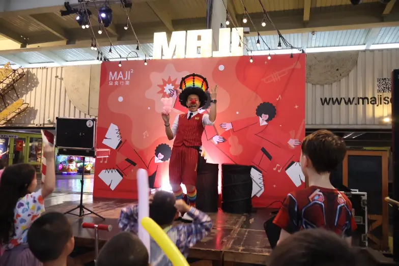
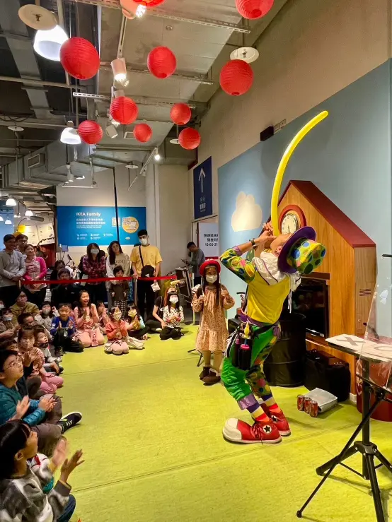
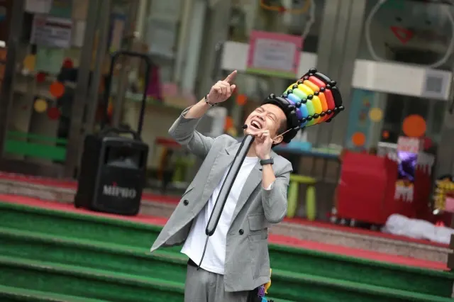
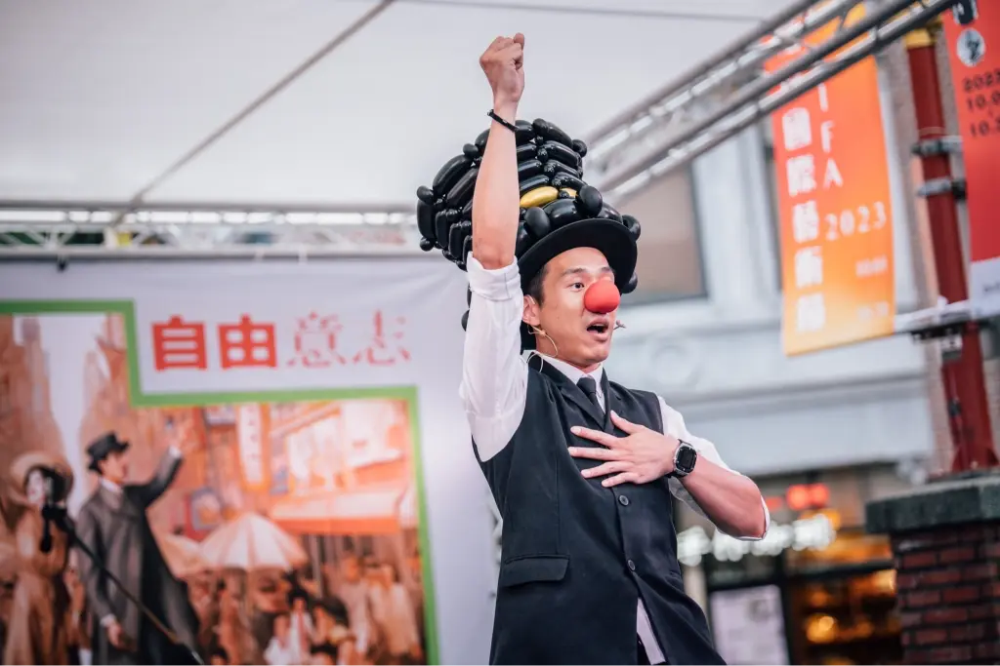
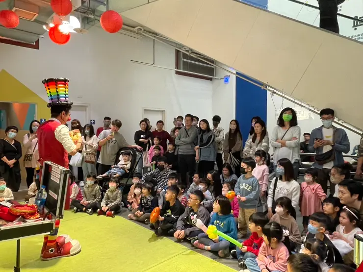

魔術表演
結合造型氣球與互動魔術，打造最吸睛的演出體驗
親子互動魔術秀是一種結合視覺驚奇、心理引導與即興喜劇的現場表演藝術。正在尋找能讓大小朋友都驚呼連連的精彩表演嗎？氣球大叔 Sony 透過沉浸式的專業互動設計，讓孩子們親自參與魔法的發生。演出服務以北中部（台北/新北/桃園/新竹/苗栗/台中/基隆）為主，其餘縣市歡迎洽詢檔期與交通安排，打造真正零冷場的歡樂時光！
🏆 頂尖品牌與校園指定魔術師：
擁有 10年以上實戰經驗，累計服務超過 3000 場次。感謝 台積電、IKEA、德州儀器、W Hotel、遠雄建設 以及全台各大幼兒園長期指定合作，給您最專業、最安心的品質保證。
- ⏱️ 演出時間： 約 30～40 分鐘精華演出，可依需求彈性調整。
- 📍 服務地區： 北中部（雙北/桃園/新竹/苗栗/台中/基隆）為主，其餘洽詢。
- 🏢 適合場合： 百貨公司、學校慶典、生日派對、企業家庭日。
- 🌟 獨家特色： 結合爆笑小丑互動、專業控場與精湛造型氣球派送。






🔥 相關魔術活動實績：
- 👉 百貨引流魔術：台中大魯閣新時代｜鼻孔吹氣球特技嗨翻天
- 👉 官方節慶魔術：台北納涼電影院｜官方主辦魔術互動秀
- 👉 親子空間魔術：桃園小矮人親子空間｜零距離互動魔術演出
- 👉 生日派對魔術：桃園阿勃勒慶生｜魔術秀＋唱跳姐姐一站式服務
魔術演出 常見問題 FAQ
Q1：可以安排「魔術＋其他表演」一起進行嗎？
A1：絕對可以！我們常將魔術表演與造型氣球互動/派送、趣味泡泡秀、幽默小丑互動組合成完整方案，讓活動更精彩。
Q2：兒童魔術表演會不會太簡單或太誇張？
A2：大叔的表演專為 3～10 歲小朋友設計，節奏快、視覺效果強烈，確保孩子開心、家長安心。
Q3：你們的魔術表演有哪些類型？適合什麼場合？
A3：提供互動式舞台魔術、近距離魔術、趣味兒童魔術等多種類型。兒童生日派對、校園活動、百貨商演皆可洽詢。
Q4：魔術表演需要什麼樣的場地或設備？
A4：只需平坦、乾淨且安全的表演空間。一般情況大叔可自備專業音響設備與無線麥克風。